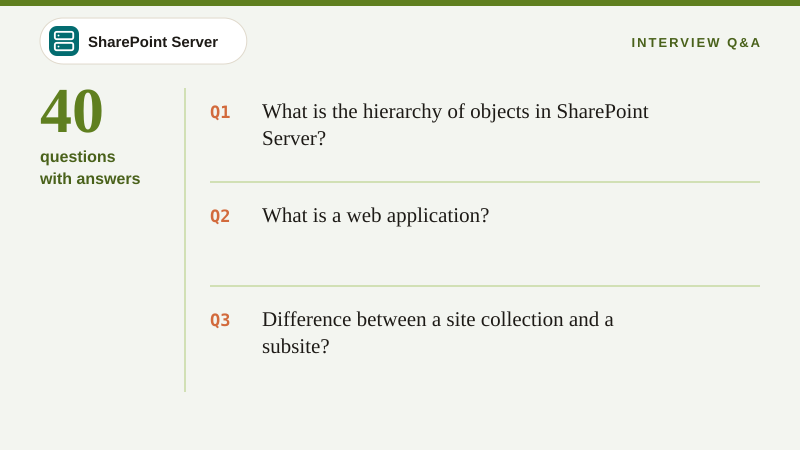
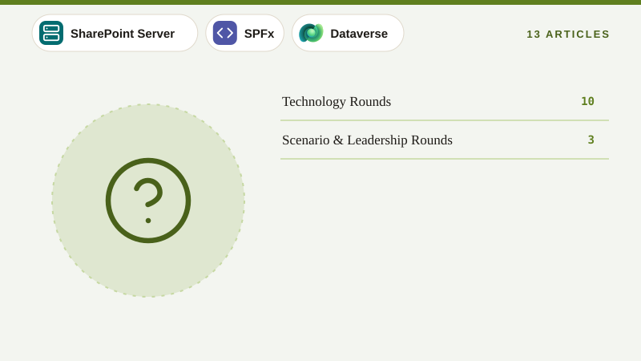
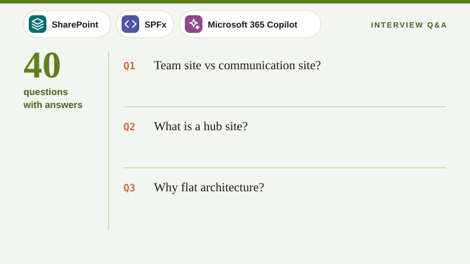
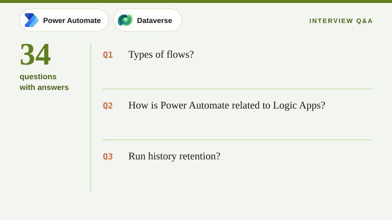
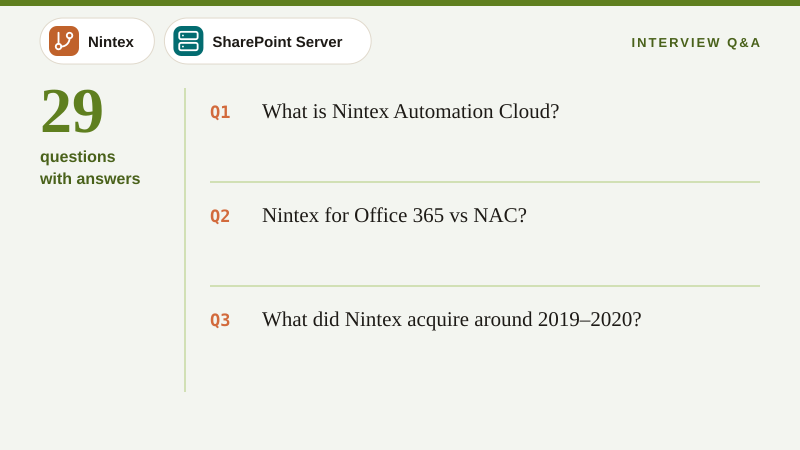
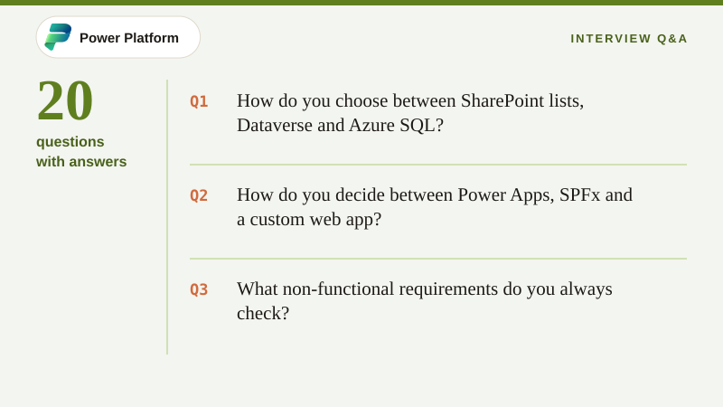
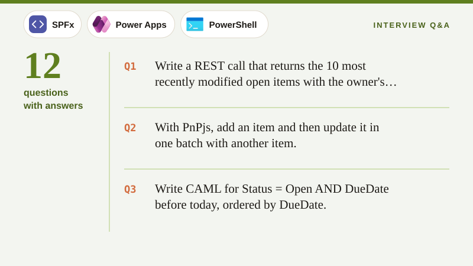

01
SharePoint On-Premises Interview Questions
Farm architecture, service applications, SSOM and CSOM, event receivers, add-ins, workflows, search, upgrades and administration, with crisp answers from basics to architect level.
SharePoint
Workflow & Forms
Migration
Copilot & AI
Design & Docs
Interview Q&A
Topic All eras
Hundreds of questions with crisp answers for SharePoint, SPFx, Power Platform, Dataverse, Nintex, migration and Azure, plus scenario and lead-level rounds.
13 articles12 code samples375 Q&As

Click a question to reveal the answer. Use Expand all answers for revision mode, or Print / PDF to make a study sheet.

Farm architecture, service applications, SSOM and CSOM, event receivers, add-ins, workflows, search, upgrades and administration, with crisp answers from basics to architect level.

Modern sites and hubs, web parts, lists and formatting JSON, permissions and sharing, search, provisioning, governance, Copilot readiness and administration in SharePoint Online.

SharePoint Framework fundamentals, lifecycle, React, property pane, extensions, ACEs, data access with SPHttpClient, PnPjs, Graph and AadHttpClient, permissions, deployment, CI/CD, performance and troubleshooting.

Canvas and model-driven apps, Power Fx, delegation, variables and collections, SharePoint and Dataverse CRUD, forms, components, PCF, custom pages, ALM, security and performance.

Flow types, triggers and conditions, expressions, SharePoint connector and HTTP, approvals, error handling, loops and performance, large lists, child flows, ALM, limits, Dataverse, Teams cards and legacy workflow migration.

Tables and columns, relationships and cascade, the security model, Web API and SDK, plug-ins, formula and rollup columns, auditing, integration, capacity and limits.

Nintex Workflow and Forms on-premises, Nintex for Office 365, Nintex Automation Cloud (start events, tasks, branch by stage, connections, Xtensions, component workflows), DocGen and migration to NAC.

Migration strategy, assessment, ShareGate features and PowerShell, mappings, incremental cut-over, SPMT and Migration Manager, scenarios (on-prem, tenant-to-tenant, file shares), throttling, workflows and validation.

App registrations and permissions, Sites.Selected, managed identity and Key Vault, Azure Functions, webhooks, storage choices, messaging, APIM, monitoring, Graph APIs, batching, delta, change notifications, OAuth flows and throttling.

InfoPath architecture and data, rules and data connections, Forms Services, retirement and migration paths, SharePoint 2010/2013 workflows, SPD actions and mapping to Power Automate.

Practical scenarios interviewers love, covering slow lists, failing flows, permission leaks, migration blockers, add-in retirement, Copilot oversharing, approval escalations, InfoPath replacement, SPFx failures and production incidents, with structured answers.

Questions for senior roles, covering architecture trade-offs, platform selection, governance, ALM, estimation, stakeholder management, team leadership, transitions and knowledge transfer, quality and risk, with model answers.

Practical tasks you may get in technical rounds, with model solutions, covering REST and PnPjs queries, an SPFx component with paging, Power Fx formulas, flow expressions, PnP PowerShell reports, CAML, KQL and a webhook receiver.
No articles match that filter.